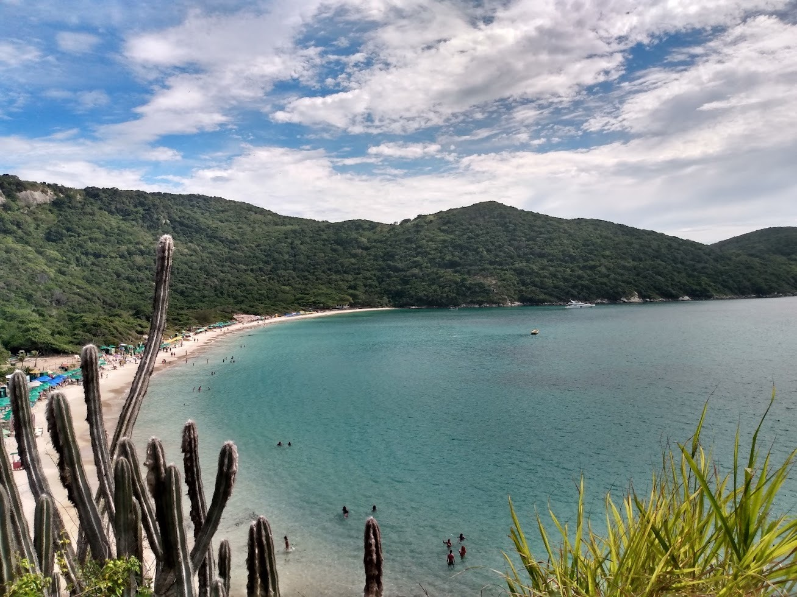

Localização
A Praia do Forno, no Rio de Janeiro, é um verdadeiro paraíso tropical. Com sua areia fina e branca, águas cristalinas e cercada por uma vegetação exuberante, essa praia encanta os visitantes com sua beleza natural intocada. É um refúgio perfeito para quem busca tranquilidade e contato com a natureza, oferecendo também ótimas opções para mergulho e snorkeling, com uma rica vida marinha a ser explorada. Com sua atmosfera serena e paisagem deslumbrante, a Praia do Forno é um destino imperdível para os amantes de praias paradisíacas.